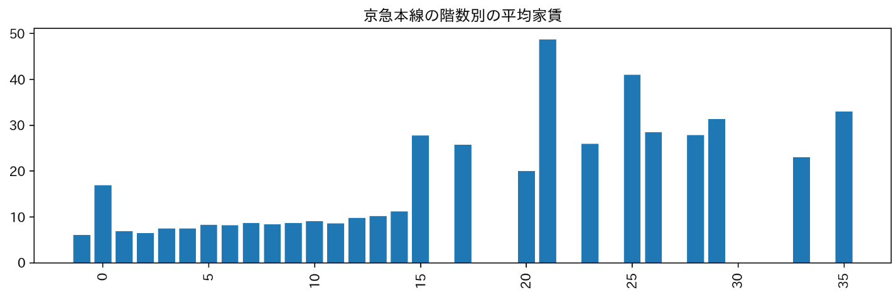

SUUMO
京急本線をおすすめ
《条件》
・上京した一人暮らしの神大生
・女子
・家賃が比較的安く、MMからも近い
・上京した一人暮らしの神大生
・女子
・家賃が比較的安く、MMからも近い

このグラフは路線別物件数です。今回は、一番多い、京急本線の物件をおすすめします。

このグラフは築年数と家賃を表しています。築年数がそこまでたっていなくても 価格があまり高くない物件があることが分かります。

このグラフは階数別の家賃を表しています。0階にとどまらず、地下の物件があることが分かります。
また、15階までのマンションが多く存在します。

このグラフは、京急本線の駅別のMMまでかかる時間を表したものです。横浜駅が圧倒的に近いことが わかります。このグラフを詳しく見ていくと、どの駅もMMまで1時間もかからないことが分かります。
このことから、京急本線は神大生にとってとても使いやすい路線だというとこが言えます。
また、京急本線は都内へも気軽に行ける距離なのでアルバイトやお出かけなどにも向いています。
生麦駅の賃貸住宅（学生マンション・アパート）情報
【生麦駅の住みやすさは？】女性の賃貸一人暮らしでチェックすべき街の特徴・治安・口コミ・おすすめを解説！
生麦駅周辺の住みやすさ！